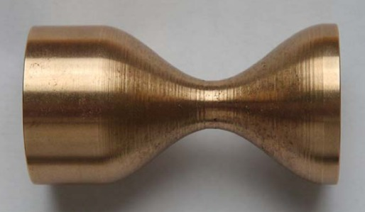

|
4. DENEYLER
Deneyler torna tezgahýnýn bütün çalýþma hýzlarýnda yapýlmýþtýr. Kesme numunesi olarak farklý çaplarda alüminyum ve pirinç kullanýlmýþtýr. Kesici takým olarak ise DCMT-11T304-AL kodlu sert metal alüminyum iþleme ucu seçilmiþtir. Kesici uç, buna uygun kateri ile sisteme baðlanmýþ ve her iki ilerleme yönünde de talaþ alacak þekilde ayar açýsý (27,5°) seçilmiþtir. Ýstenilen profiller bilgisayar hafýzasýnda oluþturulmuþtur. Oval tornalama deneylerinde toplam 5 mm (tek tarafta 2,5 mm) ovallik seçilmiþtir. Profil tornalama için tipik 2 geometri seçilmiþtir. Bunlardan birincisi silindirik ve konik yüzeylerden oluþmaktadýr. Þekil 14'de görüldüðü gibi bu profil alüminyum malzeme üzerinde iþlenmiþtir. Ýkincisi ise silindirik ve eðrisel (sinüzoidal) yüzeylerden oluþmaktadýr. Pirinç malzeme üzerine iþlenen bu profil Þekil 15'de verilmiþtir. Bu profil iþlemelerinde tezgah iþ mili hýzý 1620 dev/dak olarak ayarlanmýþ ve ilerleme hýzý 0,085 mm/dev seçilmiþtir. Ayrýca silindirik ve konik yüzeylerden oluþan bir profile ovallik de eklenerek bir deney yapýlmýþtýr. Bu deneyde elde edilen parça Þekil 16'da gösterilmiþtir. Deney sýrasýnda tezgah iþ mili hýzý 78 dev/dak olarak ayarlanmýþ ve ilerleme hýzý 0,15 mm/dev seçilmiþtir. Daha önceki yapýlan çalýþmaya [6,7] dayanarak genlik daralmasý olmamasý için iþ mili hýzý düþük seçilmiþtir. Kontrol iþlemleri bilgisayar tarafýndan gerçekleþtirildiðinden, sistemin sayýsal kontrollu bir sistem olarak analizinin yapýlmasý gerekmektedir. Sayýsal kontrollu sistemlerde, diðer parametrelerin yaný sýra örnekleme hýzý da sistemin kararlýlýðýný belirlemektedir. Bu çalýþmada teorik bir analiz yapýlmamýþtýr. Ancak daha önceki çalýþmalardan [6,7], örnekleme hýzýnýn kararsýzlýða yol açacak deðerlerden çok çok yüksek olduðu bilinmektedir.
5. SONUÇ
Bu çalýþmada, istenilen karmaþýk profili konvansiyonel bir torna tezgahýnda iþleyebilmek için hidrolik tahrikli ve bilgisayar kontrollu bir düzenek geliþtirilmiþtir. Sistem, donaným ve yazýlým þeklinde iki ana kýsýmdan oluþmaktadýr. Donaným kýsmýnda bilgisayar, veri toplama ve kontrol kartý, servo yükseltici, servo valf, piston-silindir, enkoder, konum okuyucu ve lineer cetveller bulunmaktadýr. Yazýlým ise, Windows altýnda çalýþan, C++ dilinde hazýrlanmýþ bir paket program þeklindedir.
Þekil 11. Profil parametreleri
Þekil 12. Profil analizi algoritmasý
Þekil 13. Kontrol iþlemi algoritmasý
Þekil 14. Silindirik ve konik yüzeylere sahip numune
Deneyler TEZSAN MAS165 tipi üniversal tornada yapýlmýþ, hidrolik silindir ve lineer rulmanlý kýzaktan oluþan mekanizmaya tespit edilen kesici kalem, tornanýn siperi sökülerek arabasýna yerleþtirilmiþtir. Kesici takým olarak ise DCMT-11T304-AL kodlu set metal aluminyum iþleme ucu seçilmiþtir. Deneyler torna tezgahýnýn bütün iþ mili hýzlarýnda (45-1620 d/dk) gerçekleþtirilmiþtir.
Çalýþmada geliþtirilen program, istenen karmaþýk profili oluþturabilmekte ve bu profil için kayýtlý kalemlerden uygun olanlarý, aþamalarý ve baðlama açýlarýný bulmaktadýr. Ýstenen profil ham parçadan pasolar halinde son þekline getirilmektedir. Program parça iþleme sýrasýnda, her paso için gerekli referans deðerlerini, hata ve düzeltme sinyallerini hesaplayýp bütün pasolarýn sonunda parça iþlemesinin bittiðini bildiren bir kontrol döngüsüne sahiptir. Uygulama olarak, 3 tipik geometrili profil oluþturulmuþ ve talaþlý iþlem ile parçalar imal edilmiþtir. Sonuç olarak; konvansiyonel bir torna tezgahý, geliþtirilen düzenek ile karmaþýk profilli parçalarý imal edebilir hale dönüþtürülmüþtür.

Þekil 15. Silindirik ve eðrisel (sinüzoidal) yüzeylere sahip numune
Þekil 16. Silindirik, konik ve oval yüzeylere sahip numune
TEÞEKKÜR
Bu çalýþma Gazi Üniversitesi Bilimsel Araþtýrma Projeleri tarafýndan desteklenmiþtir. Teþekkürü bir borç biliriz.
KAYNAKLAR
1. Okayama, M. H. & Kurashiki, K. K., "Machine Tool for Processing Workpiece into Non-Circular Cross-Sectional Configuration", United States Patent, No.5, 085, 109, February 4, 1992.
2. Comton, R.E., "CNC Turning Machine", United States Patent, No.4, 653, 360, March 31, 1987.
3. Cudini, M. A., "Dual Spindle Vertical Axis CNC Piston Turning and Grooving Machine", European Patent Application, No.0 519 466 A1, December 23, 1992, Bulletin 92/52, Avrupa Patent Ofisi.
4. Rasmussen, J. D., "Dynamic Variable Depth of Cut Machining Using Piezoelectric Actuators", International Journal Machine Tools Manufact., Vol.34, No.3, 379-392, 1994.
5. Usta Y., Keleþ Ö., Ercan Y., "Torna Tezgahlarýnda Oval Kesme Yapacak Hidrolik Düzenek Geliþtirilmesi", Gazi Üniv. Müh.Mim.Fak. Dergisi, Cilt 18, No 3, 1-14, 2003.
6. Usta, Y., Sayýsal Bir Hidrolik Pozisyon Kontrol Sistemi Geliþtirilmesi ve Denenmesi, Y. Lisans Tezi, Gazi Üniv., Fen Bilimleri Enstitüsü, 1992.
7. Keleþ, Ö., Puls Geniþliði Modülasyonu ile Hidrolik Konum Kontrolunun Teorik ve Deneysel Ýncelenmesi, Doktora Tezi, Gazi Üniversitesi, Fen Bilimleri Enstitüsü, 1998.
Not: Bu makale aþaðýdaki adresten pdf formatýnda indirilebilir;
Gazi Üniv. Müh. Mim. Fak. Dergisi.,
Cilt:21, No:3, 553-565, 2006
www.mmf.gazi.edu.tr/journal/2006_3/sayfa553-565_.pdf
|